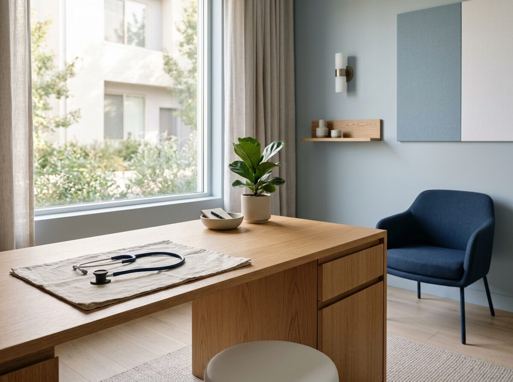
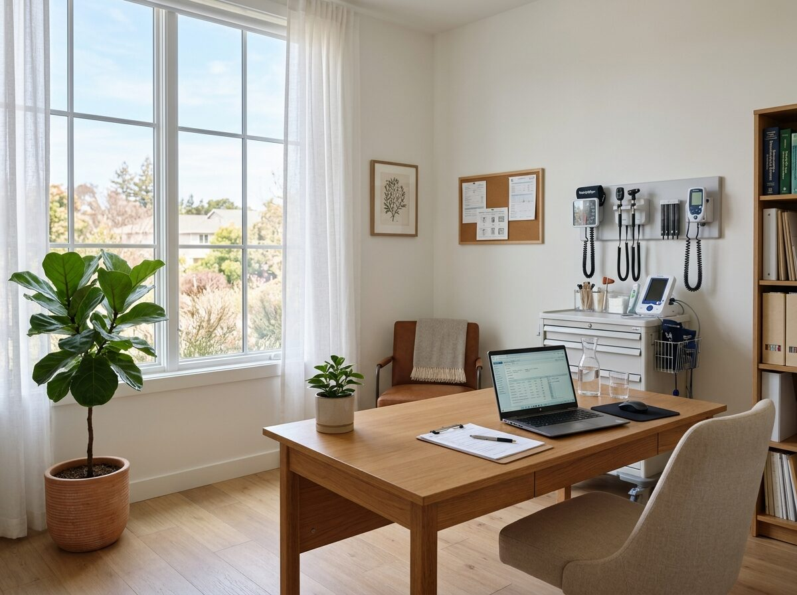

Atención médica ordenada · Av. 12 de Abril, Cuenca
Información médica clara, horarios visibles y citas sin esperas.
Centro Médico Tomebamba es un consultorio ficticio creado como demostración por AV·STUDIO. Ilustra cómo presentar especialidades, horarios en formato 24h y solicitud responsable de citas sin diagnósticos automatizados ni promesas engañosas.

Cartera de servicios médicos
Explora nuestras especialidades de ejemplo

Instalaciones y privacidad
Consultorios pensados para una entrevista médica tranquila.
Mostrar fotografías reales de la sala de valoración y la recepción ayuda a reducir la incertidumbre del paciente antes de asistir por primera vez.
- Recepción puntual: Confirmación previa de turno en horario 24h.
- Accesibilidad en Cuenca: Zona de fácil acceso sobre la Av. 12 de Abril.
- Información clara: Requisitos previos y duración estimada por consulta.
Cuerpo médico (Perfiles ficticios de ejemplo)
Ejemplo ficticio
Ejemplo ficticio
Ejemplo ficticio
Profesionales de referencia
Dr. Esteban Alvarado
Medicina General · Horario 08:00 – 16:00
Espacio destinado a detallar formación real, número de registro profesional e idiomas.
Dra. Gabriela Monsalve
Pediatría · Horario 09:00 – 17:30
Espacio configurable para indicar edad de atención, convenios o aseguradoras aceptadas.
Lic. Paulina Andrade
Nutrición Clínica · Horario 08:30 – 16:30
Espacio para detallar modalidad presencial en Cuenca o teleconsulta previa cita.
Agendamiento y ubicación
Solicita tu cita demostrativa
Referencia en Cuenca: Av. 12 de Abril y Fray Vicente Solano.
Horarios de ejemplo (24h): Lunes a viernes 08:00 – 18:00 · Sábados 08:30 – 12:30.
Este formulario no almacena historias clínicas ni confirma turnos médicos reales; prepara un mensaje validado hacia WhatsApp para comprobar la experiencia de usuario.